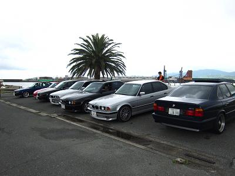
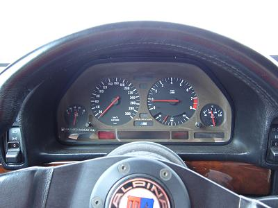
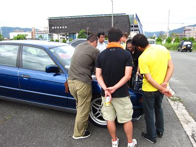
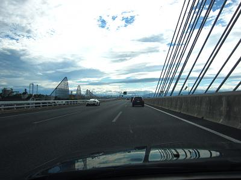

 心配だったのは天気。。 降ったり止んだりのお天気です。。 こんなお天気なので、ヘビーメンテは行われず。。 最終的には９台が集まりました。 |
 久しぶりなALPY号！ 最近も多数のモディファイが行われているようで、試乗させてもらうことに！ 乗り込んで戸惑ったのがシフトﾚﾊﾞｰのストローク！ ノーマルとは比較にならないくらいショート化されています。 エンジンをかけて、シフトに悩むことしばし・・・ 出発です＾＾ シートポジションも良かったのか、以前に試乗させてもらった時に比べて乗りやすく感じました。 特に感じたのがＬＳＤとマフラーでした。 純正の25％とは比べ物にならないくらいLSDが効いています。 でも、効きが唐突じゃないのでスムーズなんですね＾＾ そして、マフラーはというと・・・ 前に試乗させてもらった時は少しこもった排気音のイメージでしたが。。 今回は超快音です！ といっても爆音ではありません。 少し高回転で引っ張ると“これぞストレート６” というような音でした。 音だけじゃなく下からトルクがモリモリ！ これらが相乗的にフィーリングを良くしているように思いました＾＾
|
 ボンネットが開くと群がります。 軽いメンテとウダウダの後、Ｍゴローは渋滞を避ける為に一足先に帰路へ。。 |
 帰ると晴れてきますね。 これも最近のデフォルトになってきています(--;
|